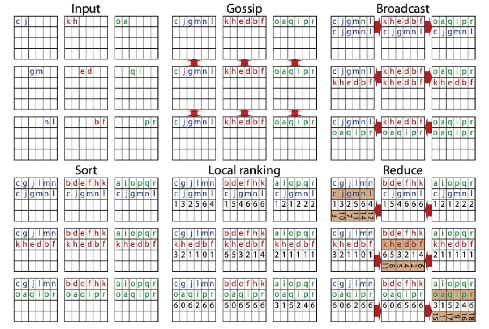
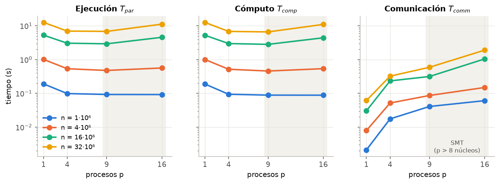
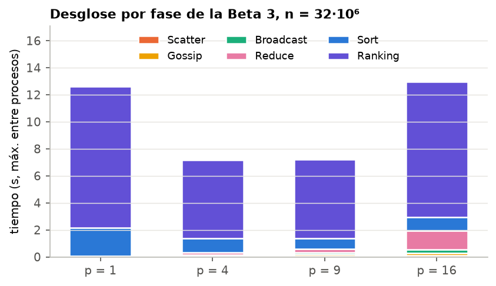
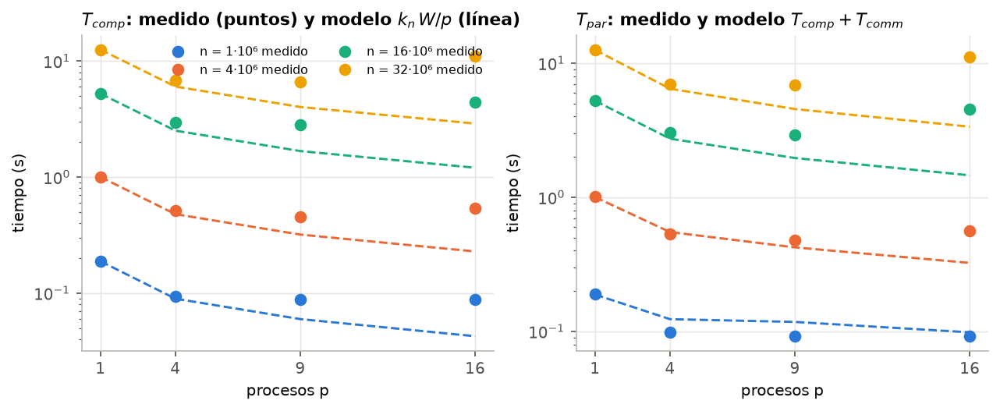
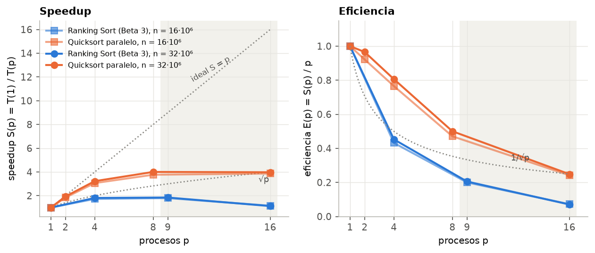
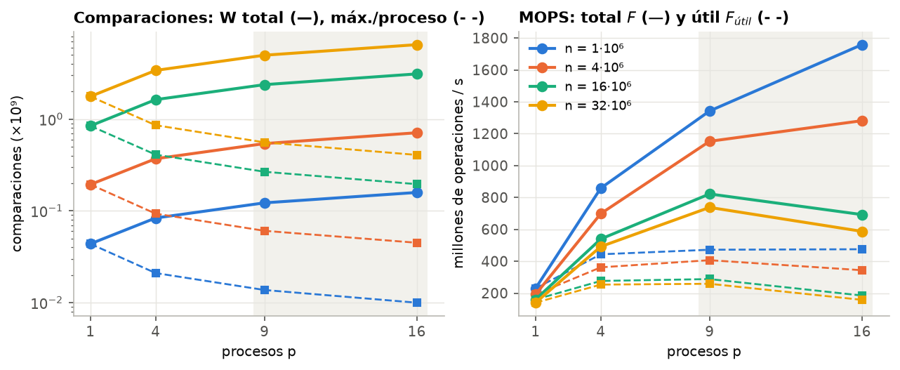
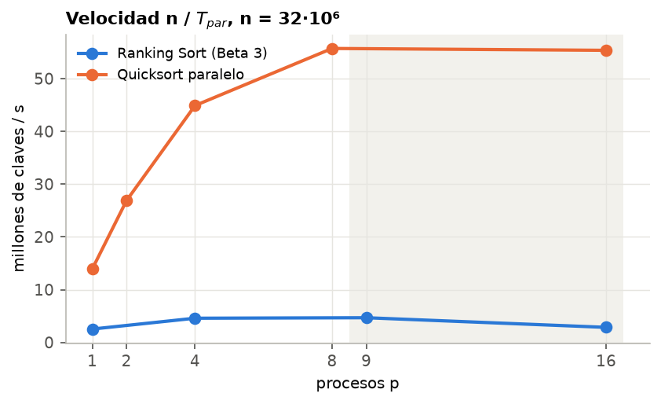
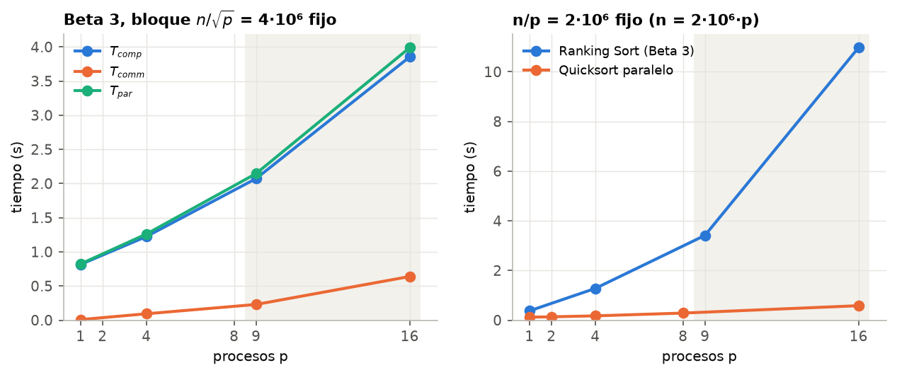
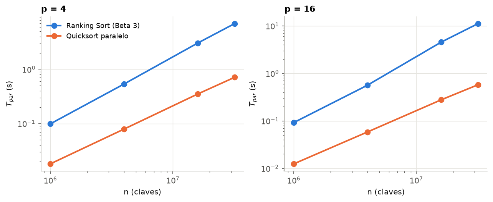
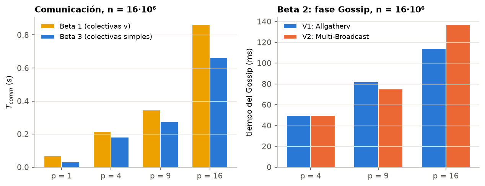

Ranking Sort en una grilla de procesos MPI
Un recorrido paso a paso por lo que se hizo en el proyecto y, sobre todo, por qué se tomó cada decisión: del algoritmo secuencial de \(n^2\) comparaciones al pipeline de seis fases en MPI, su análisis teórico y las mediciones que lo confirman (o no).
Cada elemento sabe su posición final si cuenta cuántos elementos son menores que él. El proyecto reparte ese conteo en una grilla \(q\times q\) de procesos, donde cada proceso compara un bloque contra otro usando ordenar + búsqueda binaria, y luego suma los conteos parciales por fila.
Usa el índice de la izquierda para saltar entre pasos. El paso 5 tiene un simulador que reproduce la figura del enunciado fase por fase.
Videos y audios
Cinco videos narrados. Empieza por el resumen; las preguntas y respuestas sirven para practicar antes de la evaluación, y el de fórmulas explica cada término (también por escrito en FORMULAS.md).
Los navegadores del celular pausan los videos al bloquear la pantalla, pero el audio sigue sonando y se controla desde la pantalla de bloqueo. Al terminar una pista pasa sola a la siguiente, y recuerda dónde te quedaste.
Todo el proyecto en ~8 minutos: idea, reparto, seis fases, complejidad, betas y resultados.
Descargar video (15 MB) · solo audio (6 MB)20 preguntas de análisis: el porqué de cada decisión y de dónde sale cada fórmula.
Descargar video (19 MB) · solo audio (10 MB)Speedup, eficiencia, trabajo, costo, escalabilidad e isoeficiencia: qué significa cada término y cómo se deriva.
Descargar video (25 MB) · solo audio (14 MB)Recorrido completo con animaciones del pipeline y todas las gráficas de resultados.
Descargar video (34 MB) · solo audio (15 MB)Sección por sección: reparto de datos, introsort, complejidad, escalabilidad y procesos ociosos.
Descargar video (33 MB) · solo audio (15 MB)El problema: ordenar por ranking
Se quiere ordenar \(A[0..n-1]\). El ranking de un elemento es cuántos elementos deben ir antes que él; ese número es su posición final:
$$\mathit{rank}[i] = \#\{\,j : A[j] < A[i]\,\} + \#\{\,j : A[j] = A[i] \wedge j < i\,\}$$Luego basta con \(B[\mathit{rank}[i]] \leftarrow A[i]\).
Sin él, dos valores iguales tendrían el mismo ranking y chocarían en la misma celda de \(B\). Con el desempate, los rankings forman una permutación de \(0..n-1\): cada posición se escribe exactamente una vez y el orden es estable (entre iguales va primero el de menor índice). Por eso en el código cada elemento viaja como el par (clave, índice).
El algoritmo secuencial hace una comparación por cada par \((i,j)\): \(n^2\) comparaciones, una por celda de la llamada matriz de comparaciones \(n\times n\). Es mucho peor que Quicksort o Mergesort (\(n\log n\)).
¿Por qué vale la pena paralelizarlo?
Si es tan lento en secuencial, ¿por qué elegirlo? Porque tiene una propiedad que casi ningún otro ordenamiento tiene:
- Calcular \(\mathit{rank}[i]\) solo requiere leer \(A\), que nunca cambia.
- No necesita conocer \(\mathit{rank}[j]\) de ningún otro elemento: no hay cadena de dependencias (a diferencia de Insertion Sort).
- Las escrituras finales van a celdas distintas (es una permutación).
Cualquier subconjunto de celdas de la matriz se puede calcular en cualquier orden y por cualquier procesador. Esa libertad es la que se explota en todo el proyecto.
Primer intento: franjas de filas (informe parcial)
En el informe parcial se diseñó un PRAM CREW simple: con \(b=\lceil n/p\rceil\), el procesador \(P_k\) se queda con \(b\) filas consecutivas de la matriz y recorre cada fila completa (las \(n\) columnas). Cada ranking se calcula entero dentro de un solo procesador; solo hay dos barreras (inicio y fin).
Costo: \(\lceil n/p\rceil\cdot n\) comparaciones en el procesador más cargado, es decir \(T_p = \Theta(n^2/p)\): speedup lineal, pero sobre un algoritmo de \(n^2\).
No seguía el esquema que pedía el enunciado (Input → Gossip → Broadcast → Sort → Local ranking → Reduce). Además, cada procesador necesita leer todo \(A\): en memoria distribuida eso significa replicar el arreglo completo en cada proceso. Se conserva en el anexo del informe como registro del proceso.
El esquema del enunciado: grilla \(q\times q\) y seis fases
El enunciado propone \(p=q^2\) procesos en una grilla. La matriz de comparaciones se parte en \(q\times q\) bloques de \((n/q)\times(n/q)\): el proceso \(P_{i,j}\) es dueño del bloque “elementos de \(B_i\) contra elementos de \(B_j\)”.

| Fase | Qué hace | Colectiva MPI | Por qué |
|---|---|---|---|
| 0 · Input | Reparte \(n/p\) elementos a cada proceso | Scatter | La entrada parte de un solo proceso |
| 1 · Gossip | Cada columna \(j\) reúne su bloque \(B_j\) (\(n/\sqrt p\) elementos) | Allgather en la columna | Cada proceso necesita el bloque “contra el que compara” |
| 2 · Broadcast | La diagonal \(P_{i,i}\) envía \(B_i\) a toda su fila | Bcast en la fila | \(P_{i,i}\) ya tiene \(B_i\) tras el Gossip; la fila necesita “a quién rankear” |
| 3 · Sort | Ordena localmente \(B_j\) | local | Para poder usar búsqueda binaria |
| 4 · Local ranking | Para cada elemento de \(B_i\), cuenta cuántos de \(B_j\) son menores | local (lower_bound) | \(\log\) en vez de recorrer el bloque celda a celda |
| 5 · Reduce | Suma los conteos de la fila en la diagonal | Reduce(+) en la fila | La fila \(i\) cubre todas las comparaciones de \(B_i\): la suma es el ranking global |
| 6 · Output | Las diagonales mandan (rank, clave) a \(P_{0,0}\), que coloca \(B[\mathit{rank}]\) | Gather en la diagonal | Post-procesamiento: no es un ordenamiento, el ranking ya es la posición |
En vez de comparar celda a celda (\((n/q)^2\) comparaciones por bloque), cada proceso ordena \(B_j\) y hace una búsqueda binaria por cada elemento de \(B_i\): \(O\big(\tfrac{n}{\sqrt p}\log\tfrac{n}{\sqrt p}\big)\). Con \(p=1\) el algoritmo se convierte en “ordenar y buscar”, que ya es \(\Theta(n\log n)\), no \(n^2\).
- La figura cuenta con “\(\le\)” (cada letra se cuenta a sí misma) y obtiene posiciones \(1..n\). El proyecto usa “\(<\)” con desempate por índice: posiciones \(0..n-1\) y estabilidad con valores repetidos. Difieren en exactamente 1.
- Ejemplo de verificación en \(P_{0,1}\): \(S=\)
b d e f h kordenado, \(R=\)c j g m n l⇒ conteos1 5 4 6 6 6, igual que la figura.
Simulador: el pipeline fase por fase
Mismo ejemplo del enunciado (\(n=18\), \(q=3\)) con la convención 0-indexada del proyecto. El color de cada letra indica de qué columna proviene. Las celdas naranjas son los procesos diagonales \(P_{i,i}\).
Clasificación PRAM: CREW
El enunciado pide ubicar el algoritmo en la taxonomía PRAM. Se interpreta cada colectiva como el acceso a una memoria común que reemplaza:
| Fase | Acceso equivalente en PRAM |
|---|---|
| Scatter | Cada procesador lee su tramo disjunto: lectura exclusiva |
| Allgather / Bcast | \(\sqrt p\) procesadores leen el mismo bloque: lectura concurrente |
| Sort / Local ranking | Solo datos locales |
| Reduce | Suma en árbol, cada celda la toca un procesador por ronda: exclusivo |
| Output | \(\mathit{rank}\) es permutación: ninguna celda recibe dos escrituras |
Hace falta lectura concurrente (Gossip y Broadcast) pero nunca escritura concurrente. EREW no alcanza; CRCW sería innecesariamente potente. En memoria distribuida, “leer concurrentemente entre \(\sqrt p\) procesos” se implementa en \(\lceil\log_2\sqrt p\rceil\) rondas de duplicación: de ahí sale el término \(\alpha\lceil\log_2\sqrt p\rceil\) del costo.
Métricas teóricas
Unidad de cómputo: una comparación. Comunicación con el modelo \(\alpha\)–\(\beta\) (Grama et al.): un mensaje de \(w\) pares cuesta \(\alpha+\beta w\). Se asume \(p=q^2\) y \(p\mid n\). Solo Sort y Local ranking comparan.
Cómputo por proceso y secuencial
$$T_{\text{comp}}(n,p)=\frac{n}{\sqrt p}\Big(2\Big\lceil\log_2\frac{n}{\sqrt p}\Big\rceil+1\Big)=\Theta\!\Big(\frac{n\log n}{\sqrt p}\Big),\qquad T_s=T_{\text{comp}}(n,1)=\Theta(n\log n)$$Trabajo: aquí está el punto central
$$W(n,p)=p\,T_{\text{comp}}=\Theta\big(n\sqrt p\,\log n\big),\qquad \frac{W}{T_s}=\sqrt p\,\lambda,\quad \tfrac12\lesssim\lambda\le1$$El algoritmo no es work-preserving. Hay redundancia por dos vías: cada bloque \(B_j\) se ordena \(\sqrt p\) veces (una por cada proceso de la columna \(j\)), y cada elemento de \(B_i\) se busca en los \(\sqrt p\) bloques de su fila. Es inherente al esquema del enunciado. Todo lo demás (speedup \(\sqrt p\), eficiencia \(1/\sqrt p\), sin isoeficiencia) se deriva de este hecho.
Comunicación y tiempo paralelo
$$T_{\text{comm}}=\alpha\big(\lceil\log_2 p\rceil+3\lceil\log_2\sqrt p\rceil\big)+\beta\Big(n-\tfrac{2n}{p}+\tfrac{n}{\sqrt p}+\tfrac{2n}{\sqrt p}\lceil\log_2\sqrt p\rceil\Big)+\gamma\tfrac{n}{\sqrt p}\lceil\log_2\sqrt p\rceil=\Theta(\alpha\log p+\beta n)$$ $$T_{\text{par}}=T_{\text{comp}}+T_{\text{comm}}=\Theta\!\Big(\frac{n\log n}{\sqrt p}+\alpha\log p+\beta n\Big)$$El término dominante de la comunicación es \(\beta(n-n/p)\) del Scatter: la raíz debe sacar \(n-n/p\) pares por su único puerto. Es la única colectiva cuyo volumen no baja con \(p\), la “fracción secuencial” de partir con la entrada en un solo nodo.
Speedup, eficiencia y escalabilidad
$$S_{\text{comp}}(p)=\frac{T_s}{T_{\text{comp}}}=\frac{\sqrt p}{\lambda}\in[\sqrt p,\,2\sqrt p],\qquad E_{\text{comp}}=\frac{1}{\sqrt p\,\lambda}=\Theta\Big(\frac1{\sqrt p}\Big)$$| Métrica | Resultado | Lectura |
|---|---|---|
| Camino crítico | \(T_\infty=\Theta(\sqrt n\log n)\) con \(p=n\) | Paralelismo \(W/T_\infty = n\) |
| Costo \(p\,T_{\text{par}}\) | \(\Theta(n\sqrt p\log n+\alpha p\log p+\beta pn)\) | No es óptimo en costo frente a \(n\log n\) |
| Memoria por proceso | \(\Theta(n/\sqrt p)\) | Nunca guarda todo \(A\) (salvo \(P_{0,0}\)) |
| Escalabilidad fuerte | \(T_{\text{comp}}\) cae como \(1/\sqrt p\) | Cuadruplicar \(p\) reduce el cómputo a la mitad |
| Débil, \(n/\sqrt p\) fijo | \(T_{\text{comp}}\) constante | El régimen en que mejor escala |
| Débil, \(n/p\) fijo | \(T_{\text{comp}}=\Theta(\sqrt p\log p)\) | No escala |
| Isoeficiencia | No existe | El overhead de redundancia es proporcional al trabajo útil: crecer \(n\) no lo compensa |
| FLOPs (operaciones/s) | Crecen \(\approx p\) | Pero las útiles solo \(\approx\sqrt p\): la diferencia es la redundancia |
| Velocidad (claves/s) | \(\approx\sqrt p/(2t_c\log_2 n)\), techo \(1/\beta\) | Limitada por el ancho de banda de la raíz |
Compara el speedup de cómputo con el ideal \(p\): la brecha es exactamente el trabajo redundante.
Predicciones a contrastar
Del análisis salen seis hipótesis (H1–H6) que el paso 12 compara con las mediciones: speedup \(\sqrt p\le S_{\text{comp}}\le2\sqrt p\); la fracción de comunicación crece con \(p\); cómputo constante en débil con bloque fijo; FLOPs \(\approx p\); velocidad \(\approx\sqrt p\); Quicksort con ventaja de cómputo que crece como \(\sqrt p\).
Implementación en C++/MPI
¿Por qué MPI y no OpenMP?
| Paradigma | Qué pasaría | Veredicto |
|---|---|---|
| MPI | Correspondencia fase a fase: Gossip → Allgather, Broadcast → Bcast, Reduce → Reduce. Memoria \(O(n/\sqrt p)\), \(T_{\text{comm}}\) medible. | Elegido |
| OpenMP | Todos los hilos ven \(A\): Gossip y Broadcast desaparecen y no hay redundancia. Pero deja de ser el algoritmo del enunciado y no hay comunicación que medir. | Descartado como base |
| Híbrido | Grilla MPI + hilos que reparten Sort y búsquedas. Aprovecha núcleos sobrantes. | Implementado como mejora (paso 13) |
No solo porque el enunciado lo pide: las fases Gossip, Broadcast y Reduce son colectivas de paso de mensajes, la grilla se mapea uno a uno a comunicadores de fila y columna, y medir cómputo y comunicación por separado solo tiene sentido con comunicación explícita.
El único comando nuevo: MPI_Comm_split
// k = rango global; i = k / q (fila), j = k % q (columna) MPI_Comm_split(grid, i, j, &row); // misma fila; rango en row = j MPI_Comm_split(grid, j, i, &col); // misma columna; rango en col = i MPI_Comm_split(grid, i == j ? 0 : MPI_UNDEFINED, i, &diag); // solo diagonales
El algoritmo define sus fases sobre subgrupos: Gossip en la columna, Broadcast y Reduce en la fila, Output entre las diagonales. Usar \(j\) como clave de la fila hace que el rango de \(P_{i,j}\) en row sea \(j\), así la raíz \(i\) del Bcast/Reduce es exactamente la diagonal \(P_{i,i}\). La alternativa (Send/Recv a mano) perdería los algoritmos en árbol de las colectivas, que son los que modela el término \(\alpha\log\sqrt p\).
Detalles que conviene recordar
- Par y comparador:
struct Par { int key; int idx; }yprecimplementa el orden lexicográfico, asístd::lower_bounddevuelve exactamente el conteo del ranking. - \(p\) no cuadrado: se toma \(q=\lfloor\sqrt p\rfloor\) y los \(p-q^2\) procesos sobrantes quedan ociosos (fuera de
grid). - Verificación: el proceso 0 comprueba que \(\mathit{rank}\) sea permutación, que \(B\) sea no decreciente y que entre iguales los índices crezcan. Las claves se generan en \([0,n/2]\) para forzar repeticiones y ejercitar el desempate.
- Instrumentación: cada fase entre dos
MPI_Wtime, se reporta el máximo entre procesos; un contador enprecmide comparaciones reales.
Las tres versiones beta
Cada beta cambia una sola cosa respecto de la anterior, para poder atribuir la diferencia medida a ese cambio. Las tres mueven exactamente los mismos datos; lo que se experimenta es con qué colectivas se mueven y cuántos mensajes hay en el camino crítico.
Beta 1 · Implementación funcional
Pipeline completo y correcto con las variantes v (Scatterv, Allgatherv, Gatherv) y vectores counts/displs para admitir cualquier \(n\). Es la referencia de corrección: su verificación se reutiliza en las siguientes.
// Fase 4: Local ranking. r[t] = #{ y en B_j : y prec R[t] } for (int t = 0; t < b[i]; ++t) r[t] = std::lower_bound(S.begin(), S.end(), R[t], prec) - S.begin(); // Fase 5: Reduce. Suma por fila hacia la diagonal MPI_Reduce(r.data(), rk.data(), b[i], MPI_INT, MPI_SUM, i, row);
Beta 2 · Experimento sobre el Gossip
Solo cambia la fase Gossip, implementada de dos formas: V1 Allgatherv frente a V2 Multi-Broadcast (\(q\) llamadas a Bcast en la columna, una por raíz).
V1 reenvía en cada ronda, en un solo mensaje, todos los fragmentos acumulados (alcanza los mínimos de rondas y volumen). En V2 cada fragmento viaja por su propio árbol: latencia \(\times\sqrt p\) y volumen \(\ge2\times\). Medido con \(n=16\times10^6\): empate con \(p=4\) (49,7 ms; con \(q=2\) ambas hacen un único intercambio), y con \(p=16\) gana Allgatherv por 17 % (114 vs 137 ms).
Beta 3 · Colectivas simples (versión final)
Reemplaza las variantes v por Scatter, Allgather y Gather simples; pares como tipo derivado MPI_Type_contiguous(2, MPI_INT); comunicador diag para el Gather; relleno con centinelas.
// n' = p*ceil(n/p): tamaños uniformes const int np = ((n + p - 1) / p) * p; for (int t = n; t < np; ++t) A[t] = { INT_MAX, t }; // centinelas (+inf, t) MPI_Scatter(A.data(), m, MPI_PAR, C.data(), m, MPI_PAR, 0, grid); MPI_Allgather(C.data(), m, MPI_PAR, S.data(), m, MPI_PAR, col); if (i == j) R = S; MPI_Bcast(R.data(), w, MPI_PAR, i, row);
- Menor latencia, mismo volumen: en MS-MPI (derivado de MPICH)
Scatterv/Gathervusan un algoritmo lineal, \(\alpha(p-1)\), porque los tamaños desiguales impiden el árbol;Scatter/Gatherusan árbol binomial, \(\alpha\lceil\log_2p\rceil\). Ahorro: \(2\alpha((p-1)-\lceil\log_2 p\rceil)\), 22 latencias con \(p=16\). - Centinelas: \((+\infty,t)\) son mayores que todo elemento real, así que no alteran ningún ranking real; reciben rankings \(\ge n\) y se descartan. Sobrecosto \(<p\) elementos.
- Queda en correspondencia línea a línea con el pseudocódigo.
- Medido (\(n=16\times10^6\)): \(T_{\text{comm}}\) baja 16–54 % (p. ej. 0,864 → 0,662 s con \(p=16\)).
Quicksort paralelo de referencia
Para el requisito de comparar con Quicksort se implementó la versión \(n>p\) del curso (\(p\) potencia de 2): Scatter, sort local, y \(\log_2 p\) niveles en los que el grupo elige un pivote, cada proceso intercambia con su pareja (MPI_Sendrecv) la mitad que no le corresponde, mezcla en \(O(n/p)\) y el grupo se parte en dos con Comm_split.
- Mismo Scatter inicial, mismo generador, semilla, tipo
Pary comparador: ordena los mismos datos con el mismo criterio, comparación justa (y así también es estable). - Pivote = mediana de las medianas locales (vía
Allgather) en lugar de uno al azar: reparte mejor la carga. - Sendrecv sin suma de prefijos: cada proceso tiene un único compañero por nivel.
| Métrica | Ranking Sort (grilla) | Quicksort paralelo |
|---|---|---|
| Trabajo | \(\Theta(n\sqrt p\log n)\), redundante | \(\Theta(n\log n)\), work-preserving |
| \(S_{\text{comp}}\) | \(\Theta(\sqrt p)\) | \(\Theta(p)\) |
| Latencia | \(\Theta(\log p)\) mensajes, patrón fijo | \(\Theta(\log^2 p)\), depende de los datos |
| Balance | Perfecto y determinista | Depende de los pivotes |
| Isoeficiencia | No existe | \(n=\Omega(p\log p)\) |
Experimentos y resultados
- AMD Ryzen 7 5800X (8 núcleos físicos, 16 hilos SMT), 16 GB, Windows 11, g++
-O3, MS-MPI. - 5 repeticiones por configuración, se reporta la mediana (CV mediano 2,4 %). 370 ejecuciones, todas verificadas.
- Fuerte: \(n\in\{1,4,16,32\}\times10^6\), \(p\in\{1,4,9,16\}\). Débil: bloque fijo \(n/\sqrt p=4\times10^6\) y \(n/p=2\times10^6\).
Con \(p=9\) y \(16\) los procesos comparten núcleo físico y, sobre todo, el ancho de banda de memoria. Esa zona (franja gris en las figuras) se interpreta como un límite del equipo, no del algoritmo.
Tiempos: el cómputo domina


- Con \(p=1\), el Local ranking es el 83 % del tiempo (10,46 de 12,62 s). Hace casi las mismas comparaciones que el Sort, pero cada búsqueda binaria salta por un arreglo de 256 MB y falla en caché.
- \(T_{\text{comp}}\) baja casi a la mitad de \(p=1\) a \(4\) (12,56 → 6,82 s): el \(1/\sqrt p\) predicho.
- \(T_{\text{comm}}/T_{\text{par}}\) sube 0,6 → 7,6 → 10,8 → 23 % (\(n=16\times10^6\)). La colectiva más cara es el Reduce.
Teoría frente a medición
El contador de comparaciones queda 6–9 % por encima del modelo en todos los casos (std::sort es introsort, algo más que la cota de mergesort), y el crecimiento del trabajo \(W(p)/W(1)\) coincide con \(\sqrt p\,\lambda\) con error < 2 %.

Speedup y eficiencia

| \(n\) | \(p\) | \(\sqrt p/\lambda\) teoría | \(S_{\text{comp}}\) operaciones | \(S_{\text{comp}}\) tiempo | \(S\) total |
|---|---|---|---|---|---|
| 10⁶ | 4 | 2,10 | 2,08 | 2,00 | 1,93 |
| 10⁶ | 16 | 4,43 | 4,38 | 2,14 | 2,07 |
| 32·10⁶ | 4 | 2,08 | 2,06 | 1,84 | 1,81 |
| 32·10⁶ | 16 | 4,34 | 4,34 | 1,14 | 1,13 |
En operaciones la teoría se cumple casi exacta incluso con \(p=16\). En tiempo se separa para \(p>8\): las comparaciones por proceso siguen bajando, pero 16 búsquedas binarias simultáneas saturan la memoria. El modelo asume \(t_c\) constante y no puede capturarlo.
FLOPs, velocidad y escalabilidad





Hipótesis frente a medición
| Hipótesis | Resultado | Evidencia |
|---|---|---|
| H1 \(\sqrt p\le S_{\text{comp}}\le2\sqrt p\) | En operaciones sí; en tiempo solo \(p\le4\) | Error < 2 % en operaciones; 1,76–2,00 con \(p=4\) |
| H2 \(T_{\text{comm}}/T_{\text{par}}\) crece con \(p\) | Se cumple | 0,6 / 7,6 / 10,8 / 23 % |
| H3 débil: \(T_{\text{comp}}\) constante con bloque fijo | En operaciones sí; en tiempo no (memoria) | ≈194·10⁶ comparaciones por proceso |
| H4 FLOPs \(\approx p\) | Hasta \(p=4\) | \(\times3{,}4\)–\(3{,}7\); \(F/F_{\text{útil}}=\sqrt p\lambda\) (≤ 3 %) |
| H5 velocidad \(\approx\sqrt p\) | Se cumple | \(\times1{,}81\)–\(1{,}93\); lejos del techo \(1/\beta\) |
| H6 Quicksort gana, brecha \(\sqrt p\) | Ventaja sí; convergencia al Scatter no se alcanza | Cociente \(\times1{,}85\)–\(2{,}06\) de \(p=1\) a \(4\) |
El análisis predice la forma del comportamiento con mucha precisión cuando se mide en operaciones. Las desviaciones en tiempo con \(p>8\) vienen de la saturación de memoria del equipo. Quicksort escala mejor por una razón estructural (\(\Theta(n\log n)\) vs. \(\Theta(n\sqrt p\log n)\) de trabajo); el Ranking Sort conserva el balance perfecto y un patrón de comunicación fijo.
Mejoras
Medida: versión híbrida MPI + OpenMP
| procesos | hilos | Sort (s) | Ranking (s) | \(T_{\text{par}}\) (s) |
|---|---|---|---|---|
| 1 | 1 | 1,070 | 4,401 | 5,525 |
| 1 | 8 | 0,253 | 0,754 | 1,036 |
| 4 | 1 | 0,531 | 2,765 | 3,377 |
| 4 | 4 | 0,280 | 1,566 | 1,895 |
Con 1 proceso y 8 hilos: \(S=5{,}3\), 2,8 veces mejor que la mejor configuración solo MPI (2,93 s con \(p=9\)). Los hilos de un proceso comparten el bloque: el Sort se hace una vez y no \(\sqrt p\) veces, de modo que desaparece la redundancia del esquema en grilla.
Propuestas
- Ranking por mezcla: ordenar también \(R\) y obtener todos los conteos con una mezcla lineal (acceso secuencial a memoria) en vez de \(n/\sqrt p\) búsquedas aleatorias, que causan el 80 % del tiempo por fallos de caché.
- Ordenar antes del Gossip: cada proceso ordena sus \(n/p\) y luego se mezclan \(\sqrt p\) secuencias ordenadas: menos Sort redundante.
- Entrada distribuida: generar/leer los datos en cada proceso elimina el \(\beta(n-n/p)\) del Scatter.
- Clúster: repetir con \(p\in\{9,\dots,36\}\) en núcleos físicos reales para separar algoritmo de saturación de memoria.
Preguntas de repaso
Intenta responder antes de abrir cada una.
¿Por qué el ranking de cada elemento es su posición final?
Porque cuenta exactamente cuántos elementos deben ir antes que él. Con desempate por índice, los rankings son una permutación de \(0..n-1\).
¿Qué fase usa qué colectiva y sobre qué comunicador?
Input: Scatter (grid). Gossip: Allgather (columna). Broadcast: Bcast desde \(P_{i,i}\) (fila). Reduce: Reduce(+) a \(P_{i,i}\) (fila). Output: Gather (diagonal).
¿Por qué la raíz del Broadcast es el proceso diagonal?
Tras el Gossip, \(P_{i,j}\) tiene \(B_j\). El único proceso de la fila \(i\) que tiene \(B_i\) es aquel con \(j=i\), es decir, \(P_{i,i}\).
¿Por qué la suma de la fila \(i\) da el ranking global?
Los bloques \(B_0,\dots,B_{q-1}\) particionan \(A\). \(P_{i,j}\) cuenta los menores dentro de \(B_j\); sumar sobre todos los \(j\) cuenta los menores en todo \(A\).
¿Por qué el speedup es \(\sqrt p\) y no \(p\)?
Porque el trabajo total crece como \(\sqrt p\): cada \(B_j\) se ordena \(\sqrt p\) veces y cada elemento se busca en \(\sqrt p\) bloques. \(S = T_s/(W/p) = p/(\sqrt p\lambda)=\sqrt p/\lambda\).
¿Por qué no existe función de isoeficiencia?
El overhead de redundancia \(W-T_s=T_s(\sqrt p\lambda-1)\) es proporcional al propio trabajo útil. Aumentar \(n\) no lo diluye: la eficiencia cae como \(1/\sqrt p\) para cualquier \(n\).
¿Por qué es CREW?
Gossip y Broadcast equivalen a lecturas concurrentes de un mismo bloque; nunca hay dos escrituras a la misma celda (el ranking es permutación).
¿Qué cambió de la Beta 1 a la Beta 3 y por qué mejora?
Colectivas v → simples. Mismo volumen, menor latencia: Scatterv/Gatherv son lineales (\(\alpha(p-1)\)) en MS-MPI y las simples usan árbol (\(\alpha\log p\)). El caso \(p\nmid n\) se resuelve con centinelas \((+\infty,t)\).
¿Por qué se descartó el Multi-Broadcast de la Beta 2?
Cada fragmento viaja por su propio árbol: latencia \(\times\sqrt p\) y volumen \(\ge2\times\). Allgather combina todo lo acumulado en un mensaje por ronda. Medido: 114 vs 137 ms con \(p=16\).
¿Por qué el Local ranking tarda más que el Sort si comparan casi lo mismo?
Las búsquedas binarias acceden a memoria de forma aleatoria sobre un arreglo grande y fallan en caché; el Sort recorre la memoria de forma más local.
¿Por qué los resultados con \(p=9,16\) no siguen al modelo en tiempo?
El equipo tiene 8 núcleos físicos: con más procesos se comparte núcleo (SMT) y ancho de banda de memoria. Las comparaciones sí siguen al modelo; es un límite del hardware.
¿Qué ventajas conserva el Ranking Sort frente a Quicksort?
Balance de carga perfecto y determinista (no depende de pivotes), patrón de comunicación fijo de 4 colectivas con \(\Theta(\log p)\) mensajes, y estabilidad.
¿Por qué el híbrido MPI+OpenMP es tan rápido?
Los hilos comparten memoria dentro del proceso: el bloque se ordena una sola vez y se elimina la redundancia \(\sqrt p\).
Preguntas y respuestas
Las preguntas más importantes sobre el porqué de cada decisión y de cada fórmula. Intenta responder antes de abrir cada una. También están narradas en el video Preguntas y respuestas.
Diseño del algoritmo
1. ¿Por qué el ranking de un elemento es su posición final, y por qué se desempata por índice?
El ranking cuenta cuántos elementos deben ir antes: \(\mathit{rank}[i]=\#\{j:A[j]
2. ¿Por qué se usa una grilla q×q y p tiene que ser un cuadrado perfecto?
La matriz de comparaciones \(n\times n\) se parte en \(q\times q\) bloques y hace falta un proceso por cada par de bloques \((B_i,B_j)\): \(q^2\) procesos. Si \(p\) no es cuadrado perfecto se usa \(q=\lfloor\sqrt p\rfloor\) y los \(p-q^2\) procesos sobrantes quedan ociosos (con \(p=8\) solo trabajan 4). Por eso las mediciones usan \(p\in\{1,4,9,16\}\).
3. ¿Por qué la raíz del Broadcast y del Reduce es el proceso diagonal?
Tras el Gossip, \(P_{i,j}\) tiene \(B_j\), el bloque de su columna. En la fila \(i\), el único proceso que tiene \(B_i\) es el de la columna \(j=i\): \(P_{i,i}\); por eso es quien lo difunde a su fila. En el Reduce se usa la misma raíz para que el ranking global de \(B_i\) quede en el proceso que ya tiene las claves de \(B_i\), listo para el Gather final.
4. ¿Por qué ordenar y hacer búsqueda binaria en vez de comparar celda por celda?
Comparar cada elemento de \(B_i\) con cada uno de \(B_j\) cuesta \((n/q)^2\). Si \(B_j\) está ordenado, la posición donde caería un elemento (lower_bound) es justamente cuántos elementos de \(B_j\) son menores, y se encuentra con \(\lceil\log_2(n/q)\rceil+1\) comparaciones en lugar de \(n/q\). El bloque pasa a costar \(\Theta\bigl(\tfrac nq\log\tfrac nq\bigr)\).
Complejidad y fórmulas
5. ¿De dónde sale T_comp = (n/√p)·(2⌈log₂(n/√p)⌉ + 1)?
Cada proceso maneja bloques de \(x=n/\sqrt p\). Ordenar \(B_j\) cuesta a lo más \(x\lceil\log_2x\rceil\) comparaciones (cota de mergesort) y las \(x\) búsquedas binarias \(x(\lceil\log_2x\rceil+1)\). Sumando, \(T_{comp}=x(2\lceil\log_2x\rceil+1)\): el 2 viene de sort + búsquedas y el +1 de la comparación extra de cada búsqueda. Como el tamaño del bloque no depende de los valores, todos los procesos hacen exactamente lo mismo: balance perfecto. (std::sort hace en la práctica 6–9 % más comparaciones que la cota.)
6. ¿Por qué el tiempo secuencial es Tₛ = n(2⌈log₂n⌉+1) y no n²?
La referencia secuencial es el mismo algoritmo con \(p=1\): las colectivas no hacen nada y el bloque es todo el arreglo (\(x=n\)). Queda «ordenar y buscar»: \(T_s=n(2\lceil\log_2n\rceil+1)=\Theta(n\log n)\). Las \(n^2\) comparaciones son del Ranking Sort clásico; el speedup contra él (\(\approx1{,}8\cdot10^4\)) mide sobre todo el cambio de algoritmo, no el paralelismo.
7. ¿Qué es λ y por qué aparece en las fórmulas?
\(\lambda(n,p)=\dfrac{2\lceil\log_2(n/\sqrt p)\rceil+1}{2\lceil\log_2n\rceil+1}\) es el cociente entre el costo por elemento en un bloque de \(n/\sqrt p\) y en el arreglo completo. Como el bloque es más chico su logaritmo es menor: \(\lambda\le1\) y \(\lambda\to1\) cuando \(n\gg p\) (con \(n=32\cdot10^6\), entre 0,92 y 0,96). Aparece al comparar con el secuencial: \(W/T_s=\sqrt p\,\lambda\) y \(S_{comp}=\sqrt p/\lambda\).
8. ¿Por qué el trabajo es W = Θ(n√p log n) y el algoritmo no es work-preserving?
\(W=p\,T_{comp}=n\sqrt p\,(2\lceil\log_2\tfrac{n}{\sqrt p}\rceil+1)\). Crece con \(p\) porque cada \(B_j\) se ordena en los \(\sqrt p\) procesos de su columna y cada elemento se busca en los \(\sqrt p\) bloques de su fila. Un algoritmo work-preserving tendría \(W=\Theta(T_s)\); aquí \(W/T_s=\sqrt p\,\lambda\). La redundancia es inherente al esquema del enunciado, no un error de implementación.
Speedup y eficiencia
9. ¿Por qué el speedup es √p y no p?
\(S_{comp}=\dfrac{T_s}{T_{comp}}=\dfrac{T_s}{W/p}=\dfrac{p}{\sqrt p\,\lambda}=\dfrac{\sqrt p}{\lambda}\). Los \(p\) procesos trabajan todo el tiempo, pero hacen \(\sqrt p\) veces más de lo necesario. Con comunicación es aún menor: \(S=S_{comp}\cdot T_{comp}/T_{par}\le S_{comp}\). Medido con \(p=4\): \(S\approx1{,}8\)–\(1{,}9\).
10. ¿Qué significa la descomposición E = (Tₛ/W)·(T_comp/T_par)?
Es la eficiencia \(E=T_s/(p\,T_{par})\) separada usando \(W=p\,T_{comp}\). El primer factor, \(T_s/W=1/(\sqrt p\,\lambda)\), es la redundancia del algoritmo: no depende de la red ni del código. El segundo, \(T_{comp}/T_{par}\), es la fracción del tiempo dedicada a calcular y mide el peso de la comunicación. Como el primero cae como \(1/\sqrt p\), \(E=\Theta(1/\sqrt p)\).
Comunicación
11. ¿Por qué el Scatter cuesta β(n − n/p) y es lo que no escala?
Con árbol binomial el Scatter tiene \(\lceil\log_2p\rceil\) rondas, lo que solo reduce la latencia; pero la raíz debe sacar por su único puerto todos los datos que no se queda: \((p-1)n/p\) pares. \(T_{scatter}=\alpha\lceil\log_2p\rceil+\beta(p-1)\tfrac np\). Ese volumen no baja con \(p\): es la parte secuencial de empezar con la entrada en un solo proceso, y pone un techo al speedup, \(S\le T_s/(\beta(n-n/p))\). Leer la entrada ya distribuida lo eliminaría.
12. ¿Por qué el Broadcast y el Reduce llevan el factor ⌈log₂√p⌉ multiplicando a β?
Se modelan con árbol binomial sobre la fila (\(\sqrt p\) procesos) y, a diferencia del Scatter, en cada ronda se retransmite el bloque completo de \(n/\sqrt p\) elementos: \(T_{bcast}=\lceil\log_2\sqrt p\rceil(\alpha+\beta\,n/\sqrt p)\). El Reduce además suma los vectores en cada ronda: \(\lceil\log_2\sqrt p\rceil(\alpha+(\beta+\gamma)\,n/\sqrt p)\). Fue la colectiva más cara medida: 1,41 s con \(p=16\) y \(n=32\cdot10^6\).
Escalabilidad, PRAM y métricas
13. ¿Por qué no existe función de isoeficiencia?
El overhead es \(T_0=p\,T_{par}-T_s=T_s(\sqrt p\,\lambda-1)+p\,T_{comm}\). Mantener \(E\) constante exige \(T_s=K\,T_0\), pero el primer término ya es proporcional a \(T_s\): habría que cumplir \(\sqrt p\,\lambda\le1+1/K\), imposible cuando \(p\) crece, para cualquier \(n\). Aumentar \(n\) no diluye la redundancia. Frente al Ranking Sort secuencial \(n^2\), en cambio, basta \(n=\Theta(p)\).
14. ¿Por qué el modelo PRAM es CREW?
En el Gossip y el Broadcast, \(\sqrt p\) procesadores leen el mismo bloque a la vez: lectura concurrente (CR). Sort y búsquedas son locales; el Reduce en árbol tiene accesos exclusivos; y en la salida, como el ranking es una permutación, ninguna celda recibe dos escrituras: escritura exclusiva (EW). EREW no alcanza y CRCW sería innecesariamente potente.
15. ¿Por qué las operaciones por segundo crecen como p si el speedup crece como √p?
\(F=W/T_{par}\) cuenta todas las comparaciones, también las redundantes: los \(p\) procesos comparan todo el tiempo, así que crece \(\approx p\) mientras domine el cómputo. \(F_{útil}=T_s/T_{par}\) solo cuenta las necesarias y crece como \(S\). Su cociente es \(W/T_s=\sqrt p\,\lambda\): medido 1,94 · 2,85 · 3,72 con \(p=4,9,16\). La diferencia entre ambas curvas es exactamente el trabajo redundante.
Implementación y resultados
16. ¿Por qué la Beta 3 mejora a la Beta 1, y por qué se descartó el Multi-Broadcast?
Beta 1 → Beta 3: mismo volumen, menor latencia. En MS-MPI, Scatterv/Gatherv son lineales (\(\alpha(p-1)\)) y Scatter/Gather usan árbol (\(\alpha\lceil\log_2p\rceil\)): ahorro \(2\alpha((p-1)-\lceil\log_2p\rceil)\), 22 latencias con \(p=16\). Medido: \(T_{comm}\) baja 16–54 %. Beta 2: en el Multi-Broadcast cada fragmento viaja por su propio árbol (latencia \(\times\sqrt p\), volumen \(\ge2\times\)), mientras que Allgather envía lo acumulado en un mensaje por ronda: 114 vs 137 ms con \(p=16\).
17. ¿Por qué con 9 y 16 procesos el tiempo no baja como dice el modelo?
Las comparaciones por proceso sí bajan como \(1/\sqrt p\) (el contador coincide con el modelo con error < 2 %). Pero el equipo tiene 8 núcleos físicos: con \(p>8\) los procesos comparten núcleo (SMT) y, sobre todo, el ancho de banda de memoria, con búsquedas binarias que fallan en caché. El modelo supone que el costo de una comparación \(t_c\) no depende de \(p\); aquí deja de cumplirse. Es un límite del hardware, no del algoritmo.
18. ¿Por qué el post-procesamiento no se incluye en T_par?
Al terminar el Reduce el problema ya está resuelto: cada diagonal conoce la posición final de sus elementos. El Gather y la colocación \(B[\mathit{rank}]\leftarrow\) clave solo entregan el resultado, sin ordenar, y los hace un subconjunto (\(\sqrt p\) procesos y luego solo \(P_{0,0}\)), así que no bajan con \(p\): \(T_{post}=\alpha\lceil\log_2\sqrt p\rceil+\beta(n-n/\sqrt p)+n\). Se reporta aparte (0,55–0,74 s para \(n=32\cdot10^6\)) para no distorsionar speedup y eficiencia.
Comparación con otras versiones
19. ¿Por qué Quicksort paralelo es más rápido, y qué ventajas conserva el Ranking Sort?
Quicksort es work-preserving: \(W=\Theta(n\log n)\), cada proceso ordena solo \(n/p\) elementos y su eficiencia de cómputo es \(\Theta(1)\); el cociente de cómputo RS/QS crece como \(\sqrt p\) (medido: se duplica de \(p=1\) a \(p=4\)). El Ranking Sort conserva un balance de carga perfecto y determinista (no depende de pivotes), un patrón fijo de 4 colectivas con \(\Theta(\log p)\) mensajes frente a \(\Theta(\log^2p)\), y estabilidad.
20. ¿Por qué el híbrido MPI+OpenMP es la versión más rápida del Ranking Sort?
Los hilos de un proceso comparten memoria: el bloque se ordena una sola vez y las búsquedas binarias se reparten entre hilos, así que desaparece la redundancia \(\sqrt p\) de la grilla. Con 1 proceso y 8 hilos, \(T_{par}\) bajó de 5,52 a 1,04 s (\(S=5{,}3\)), 2,8 veces mejor que la mejor configuración solo MPI (2,93 s con \(p=9\)). El Quicksort paralelo sigue siendo más rápido (≈ 0,29 s con \(p=8\)).